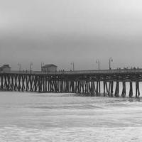
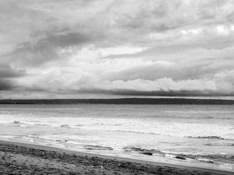
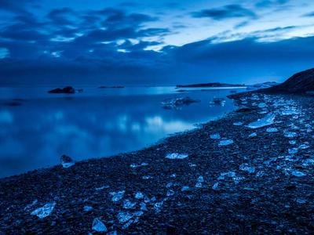

Skip to Main Content

Home
Neighborhood Walks
Walks in the Park
Michigan Parks
Forest trail walk
Sunlight through trees
Rocky stream
River kayaking
Park waterfall

Misty river morning
Fern-lined path

Wildflower meadow